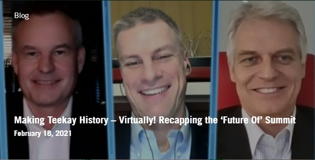
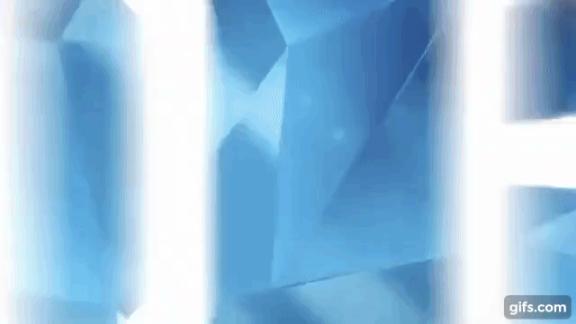
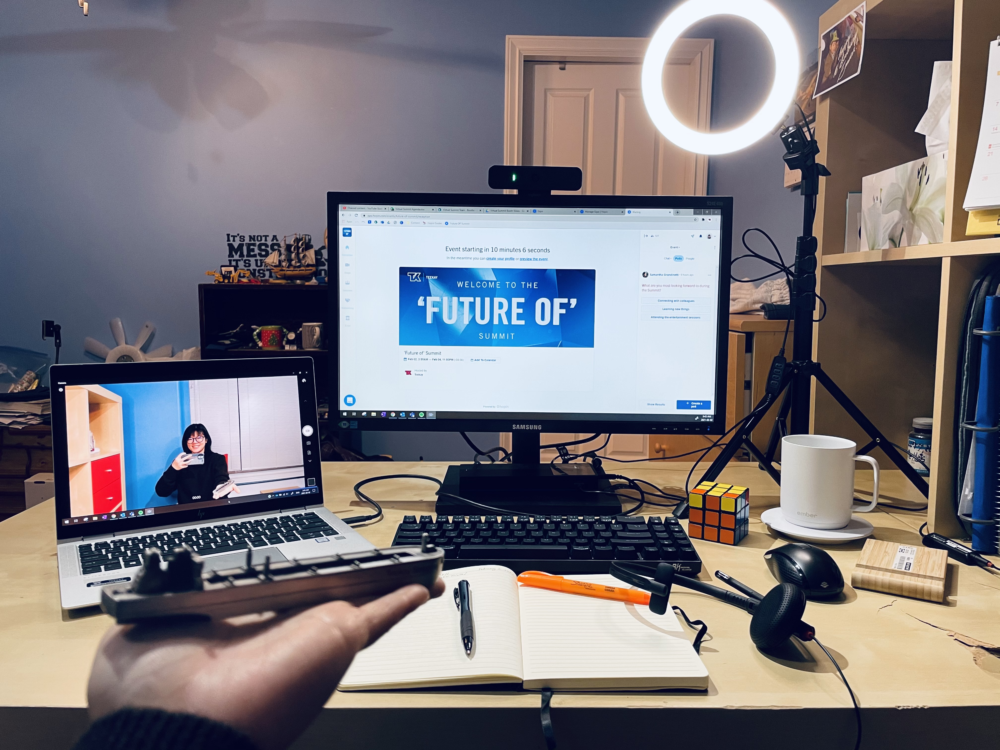
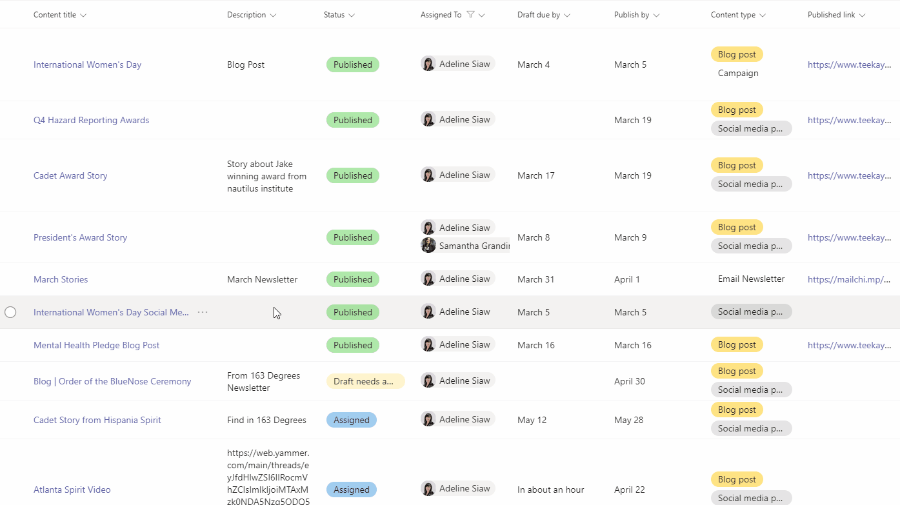

I love learning new things, and I am especially interested in social innovation, digital media, and interdisciplinary collaboration. I am constantly looking for new ways to tell stories (in a more impactful way). When I'm not at my desk working on projects, you can find me venturing out in the wilderness or jamming out to a musical interlude on my guitar.
Since this is my third and final term for Co-op, I wanted to conclude this work term with something that would reflect my learning and growth. With much guidance from my team, I decided to put together a portfolio to showcase all the work I tackled in the short span of four months. I also added a fun twist – building a whole website from stratch to showcase my portfolio.
This inspiration was drawn after attending one of FCAT CMN8 monthly Workshops that walked us through basic HTML & CSS. After that, I took some time every weekend to learn, practice and read about the coding process. I realized that exercising my learning capabilities in other fields was beneficial in finding newer and more creative ways to work. It is also vital to take the ample amount of time to learn, absorb and reflect on the process thoroughly. After many hours of YouTube tutorial videos and constant nudging at my developer friends for feedback, my eportfolio was brought to life! Despite the blood, sweat and tears behind the scenes, I am proud of the result.
At a Glance
I was privileged to be provided with countless opportunities to learn new skills and ways of thinking while working at Teekay. I have always viewed learning as a constant journey, but being part of Teekay made it clear to me that the opportunity to learn should not be taken for granted, instead, used diligently, appreciated and seized.
This eportfolio depicts my best work and reflections from my co-op term with Teekay Corporation.Teekay is a leading provider of international crude oil and gas marine transportation services. Established in 1973, Teekay has developed from a regional shipping company into one of the world’s largest marine energy transportation companies. We bring energy where it is needed — anywhere in the world — to power the global economy and to improve people’s lives.
It was difficult to incorporate all the work I have done into this eportfolio. But instead, I chose to showcase all the work that has required me to multiply my skill set. I am also looking forward to continuing to build and improve on these skills in order to be more articulate and a better team player for my team and the organization.
I have divided my e-portfolio into 3 sections: Project Management for the 'Future Of' Summit, Learning to be a Social Media Specialist, and the Journey. Each of these individual parts allow me to share and reflect on the experiences I had with learning at Teekay and how it will help me down the road.
Project Management for the 'Future Of' Summit
In this section, I will provide a behind-the-scenes look at how I managed and coordinated 16 different expo booths for our first ever virtual summit, the 'Future Of' Summit. The kicker is that I pulled this off in my first month of working at Teekay.
Learning to be a Social Media Specialist
In this section, I will be breaking down the various roles I play in maintaining a pulse on our social media platforms while showcasing some of my finest creative work.
The Journey
In this section, I will be providing a reflection of my learnings at Teekay thus far and how it has continued to build and develop my skills for my future career.
Project Management for the 'Future Of' Summit
👆 Click on the blog images to read the blog posts that were written by me. 👆
This was a huge project for the organization. We had never brought the whole organization; across sea and shore, and around the globe, all together in one space. To be given the opportunity at this point in time - while working from home, away from colleagues and friends - it was even more crucial to nail it down. There was a lot of work to put in behind the scenes and my team was quick to realize that they needed an extra set of hands in the mix to ensure the success of the Summit.
And trust me, planning and managing a virtual summit is just as hectic and dare I say, even more technical than an in-person conference. My team was quick to spend an extra week before the start of the term to begin my onboarding. This was a prudent idea as I was able to get familiar with my team and the organization before the start of one of my most exciting and accelerating co-op terms.
My main role for the Summit was being the captain of the expo booths. The virtual platform, Hopin, had a feature to showcase tradeshow booths in the virtual space for attendees to explore; similar to an in-person conference. As the captain of this vessel, I worked in close liaison with teams across the organization for the expo booth. In short, I was in charge of coordinating and compiling all the content required to be showcased in the expo booth. I also organized the timing and prepared the teams to navigate the virtual platform to present their content during the Summit.
After a few initial meetings across the organization about the interest of the project, I began collaborating with teams on how they would present their content. My team had given me control in terms on how I would go about organizing and coordinating with the various teams.
I began by building dummy booths in our test events to help explain how the platform worked. I found this the best way to engage the teams and help them visualize how they could present their content in this new virtual space. This improved my presentation, coordination, and management skills. I was able to delegate work for the teams to build their content, schedule weekly check-ins to monitor the progress and provide assistance and guidance when required. I would then provide my team with a quick overview on the progress and flag any issues that was faced. With that, we were able to deliver a successful experience during the Summit.

There was a total of 16 booths in the conference space, varying from future/ongoing projects to branding booths. Because Teekay is a global organization with offices around the world, I got to meet and work with a wide range of colleagues from all points of the world with a simple meeting request. From then on, it wasn't hard to fall in tune with the conversations I was having across the organization, not to mention the endless support I was receiving! Overall, the Summit was a huge success (as noted in the blog post) which I wrote together with my teammate.
Not to mention, I had managed to pull this out of the bag in my first month at Teekay. This was easily one of the highlights of my co-op term as my organizational and time-management skills were definitely put to the test. The Summit was a very eye-opening experience as I was able to embrace and experience the full force of our #TeekaySpirit shining throughout the whole process. Needless to say, this was definitely one for the books!

💻 Tuning in at 4am with the team to kick off the 'Future Of' Summit! 💻
Learning to be a Social Media Specialist
In 2021, being an avid social media user is a no-brainer. But having the opportunity to be an expert in the field? Sign me up!
At the start of the term, I was quick to voice out my eagerness and excitement to learn and (hopefully) master the true art of social media. Not only was I excited to put the knowledge I had obtained from school into a hands-on experience, but I was also even more excited to test out my creative side.
Media Monitoring
Every brand and organization know that having a finger on the pulse of customer sentiment is essential in growing and advancing your presence and business. Therefore, social media monitoring plays a crucial role in how I observe, analyze, and provide insight into what is being said about Teekay.
At the start of my day, I spend the first couple minutes filtering through our social media channels to catch up on any unresolved tags and check-in on our status. And throughout the day, I would use Hootsuite to monitor streams of comments, mentions, topics and other messages related to Teekay.
By using the right tools, I can get immediate updates on any tags or news about the organization. This way, I can also share user-generated content that often times boosts the engagement from our audience.
Maintaining a Content Rhythm
Not only do I ensure that our brand is upholding its status and name, I am also in charge of planning and maintaining a content rhythm on our social channels. I would always take time out of the week to scout for potential stories from our company's intranet that can be promoted externally onto our social platforms.
My process would begin with:
Looking through our internal and external social platforms for any relevant and interesting content to be amplified.
Evaluating whether the content is relevant to our audience and also making sure that there is a variety to the categories posted (e.g celebrations, accomplishments, educations etc.)
Pitching the idea of the blog post and the storyboard. This is done by laying out the skeleton of the post and drafting the content.
Reaching out to the sources or contacts for permission, verification and inquires about the project. This is essential to providing as much context to the story and encouraging advocacy for more opportunities for storytelling.
To ensure a seamless reviewing process, I would draft up the blog post and social media posts and captions in an on-going word document for easy access. Then, I can easily copy the edited content onto Hootsuite and Wordpress to be scheduled.
Updating the monthly content schedule to ensure that quarterly content is noted so that we can plan for bigger or different themed stories.

📃 Here is the content planner that my team and I use to maintain a systematic work flow. 📃
This process fluctuates depending on how much content I can find and repurpose. Often, a time sensitive (like a rescue) would appear in our inbox which requires a quick turnaround to stay relevant. Therefore, being flexible and learning on the fly has been a valuable skill I am continuously molding with my time at Teekay.
Building Social Media Campaigns
'Probability' is the word that comes to mind when I think about social media campaigns. If you pull off a successful social media campaign, your probability to improve brand recognition, increase traffic and conversion opportunities doubles. Having little to no experience in this field, my team had placed me in the driver seat to plan and implement my very first social media campaign.
This was an exciting campaign as it hit close to home, International Women's Day. After a few brainstorming sessions, we came up with the idea to highlight stories of leadership from the incredible women across our organization. We had created graphics to be posted across the three days leading up to the celebration. After editing and finalizing all the content, I scheduled the content on Hootsuite. Lastly, we tracked the impact of the campaign and saw a 200% increase in total impressions across our social platforms. This was a huge insight that was brought up in our daily meetings and later again in our team strategy day.
What I learnt from this:
Setting a clear goal is crucial to ensure alignment with all the tangible objectives that would be carried out. Asking questions and seeking help when you are unsure or stuck should never be overlooked.
Putting the time and effort to plan a proper social media campaign has been one of the most insightful lessons thus far. This is crucial to ensuring that the campaign fufills its purpose and articulates key messages.
Maintaining a well-designed and cohesive branding across your social media platforms can increase brand awareness and differentiate yourself from your competitors.
Diving down deep into the basic of who, what, where, when, and how – is a great starting point.
Monitoring and concluding the dataset is crucial to understanding what worked and highlighting key “must-do” for future campaigns.
Check out our social media channels
All About Data Analytics
Data is everything. No data is too big to overcome and no data is too small to overlook. Good data allows organizations to establish baselines, benchmarks, and goals to keep moving forward.
Digesting and learning to understand data has been one of the biggest learning curves this work term. I have always known the value of collecting and understanding the dataset behind, but this on its own could be a full-time job!
After initiating my interest in the subject, my first analytics project was pulling website traffic analytics for the Tankers team which gave me an introduction to Google Analytics. My teammate was very patient to explain how the platform worked and where I could find and pull the data from. After a successful first try and reiterations, I was feeling a bit more confident with my new skillset.
With that newfound motivation, I took my first stab at pulling and evaluating our social media statistics for 2020. My team bestowed on me full control (again) on how I would pull and present the data. To ensure that I was on the right track, I set time with them to ask them if there were any distinctive campaigns or stats they would like to see. With that in mind, we were able to establish key points and takeaways that must be included while also providing me more context on the past year projects.
My main takeaway from this experience is the importance of quantifying and reporting data to showcase the impact of the work. Quantitative and qualitative data collected from social engagement and sentiment can show the importance of brand awareness and help learn about what type of content performs well or vice versa. This provides our stakeholders with a better understanding of how our work results in a positive public impression of our brand and work ethics.
Takeaways
To conclude, there is still some way to go on my journey towards being a social media specialist. I had started this role from an unseasoned background in marketing and social media management. My learning curve has been a constant climb in this aspect and yet there is so much more to learn and improve.
As the saying goes, Rome was not built in a day. Important work takes time and I have come to realize that most of the work boils down to the attention to details. Here are some key lessons that I will continue applying throughout my career as a social media specialist:
Pushing to ask more questions and being concise about the goals can ensure better tailored content that checks off all the boxes. It never hurts to be clear and concise about your tasks and goals. I found recapping the points at the end of the discussion a great way to make sure we were all aligned. Checking in and providing updates are also great ways to keep yourself on track.
The process takes more time than you think. From planning to implementing, there are so many variables to consider. To having countless revisions and feedback, collaborating and brainstorming, and even scheduling the content; the time and effort behind these items should never be overlooked. The main learning point is not to rush into the task and spend some time evaluating the issue fully. I found planning and working backwards the best way to counter these roadblocks. When faced with uncertainty and overwhelming-ness, I always turn to my team and ask for help. I found that people are more willing to lend a hand – if you ask in the right way.
Everybody loves a good story. Storytelling is a fundamental human experience that unites people and drives deeper and stronger connections. I never realized how much storytelling was incorporated into all aspects of my work. I found myself using an elevator speech every time I had to pitch an idea, explain a plan or how I came up with the idea. Content is king and as long as you can portray that well with storytelling, it is a great tool for learning and sharing.
I thoroughly enjoyed writing this blog story for Teekay. After reaching out to the recipient with some questions and permissions, he came back to us with his reflections that led to a better story. I took time to synthesize through his reflections to best showcase his story.
After reviewing the content and getting approval from the team and participants, I wrote up and planned the social media campaign with tons of guidance and support from my team. I even edited the videos as it was initially in a larger panel discussion from our ‘Future Of’ Summit!
These categories of blog posts were required to be published within a time frame to maintain its relevancy. Once it was published, I also promoted it on our social channels and received a lot of impressions and engagements from it.
The Journey
This work term has shown me how having your values aligned with the organization is crucial in setting yourself up for success. I noticed I was learning a lot due to the passion and pride that was painted all over the work of the organization. I also noticed how diverse my projects and tasks were throughout the term which has left a positive impact on me. Rather than focusing on specific themes, I wanted to show a holistic view of how my experience at Teekay was interconnected with my experiences in other co-ops, in school, and in my personal life. Because of all these connections to my interests, I found meaning in a lot of the work I did during this term.
Learning and Working in a Niche Industry
I started this position with basic knowledge about the maritime industry. So naturally, that meant I had to work twice as hard to understand and familiarize myself with terminology and procedures for the job. Fast forward 4 months later, I am constantly hearing and writing stories about this industry. My knowledge of the industry was recently put to the test when I had to explain to my friends and family about the impacts and complications of the Ever Given Suez Canal blockage.
Not only have I learned a vast amount of practical information about the maritime industry, but I can also contribute to discussions due to my understanding of the vital role this industry plays in our day-to-day lives. I am proud to acknowledge all the hard work that goes on behind the scenes to keep this industry running and being able to continue learning and working in it.
Learning to Adopt to a Growth Mindset
Working at Teekay has taught me to never stop learning and striving for the best. Despite their long legacies at Teekay, all my peers have continuously shown me that people should never stop pushing for opportunities to learn and develop themselves as individuals, teams, and an organization. I am always given the opportunity to try new things and spearhead projects with my own flair. I am constantly gaining hands-on experience which works to develop the skill sets I am lacking in, such as editing efficiently, communicating comfortably in various forms, to planning and implementing marketing campaigns and strategies.
This has inspired me to always stay curious and to embrace a “you don’t know it all” mindset. You can always find me noting down quotes, phrases or even statistics that was mentioned in meetings or conversations for my reference. I found this helpful to absorb and remember all this knowledge as there is always something I can reference back too. I have learned so much and look forward to continuing to grow and develop my skills and knowledge in my extended work term.
Being Agile and Adaptive to Your Environment
Additionally, my eyes have been opened to the set up and operations of a global organization. On my first day, my manager said "Teekay never sleeps". To our seafarers’ onboard vessels around the world to the various offices across the globe, Teekay never skips a beat. This has helped me improve my abilities to adapt to new environments and challenges on-the-go. Not to mention, embracing and thriving in a diverse environment that incorporates our Teekay values.
I must say, my team is a force to be reckoned with. These three ladies are the masterminds behind ALL the corporate communications at Teekay. A huge part of their success is due to their agility and ability to leverage their strengths. They have shown me that there is no shame in asking for help and that striving for excellence comes with iterations. We would always spend time to bounce ideas of each other and have each other review our work. This has taught me to take time to review my work and always get a second opinion for good measure. Everyone has their own working style, and it is important to figure out what works best for you. I found talking and walking through my train of thought either with a teammate or even to myself a great way to redefining your end goal.
Always Embracing Fun
Despite the challenge of remote working, my team has been outstanding in keeping our morale and engagement high with each other. From dance parties, chats about wellness therapies and remedies, to adorable puppies and apples; my team has been nothing short of passionate, conscientious, and first-class liveliness!
My team have been exceptional mentors by constantly providing feedback and challenging me to think, do and see things in a forward thinking and holistic way. They have been a big pillar of strength for me to lean on throughout my work term. They always have the door open for my endless inquiries and never fails to resolve them with enthusiasm. It was not hard to learn from them and feed off their energy when I can see how passionate they are about the work they do. This eportfolio is a testimony to their impactful mentorship and leadership that has been instilled in me. To commemorate my manager's love for the golden rule of three(s), I will end my reflection with three words that best describes the experience of this co-op term.
"Stimulating, fun, and thought-provoking!"
💃 Never settle for a team that won't jam out to dance in their seats 💃